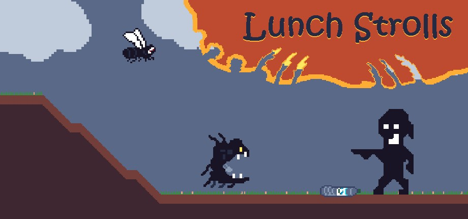
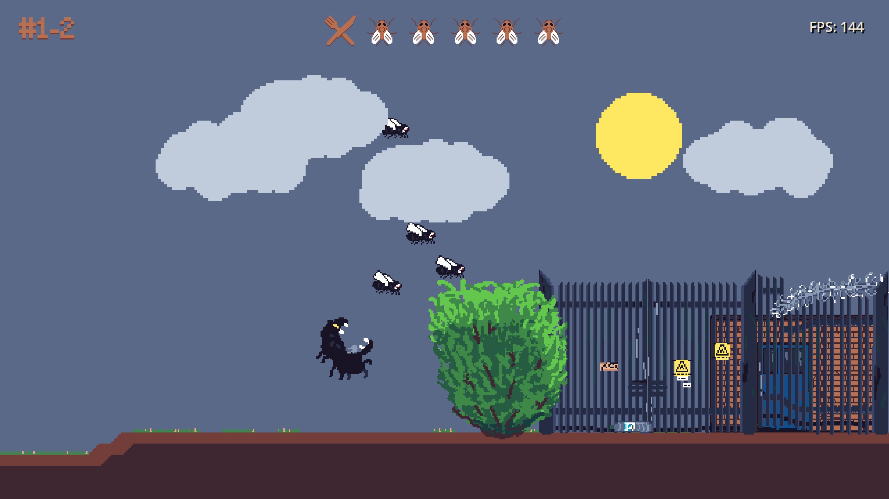
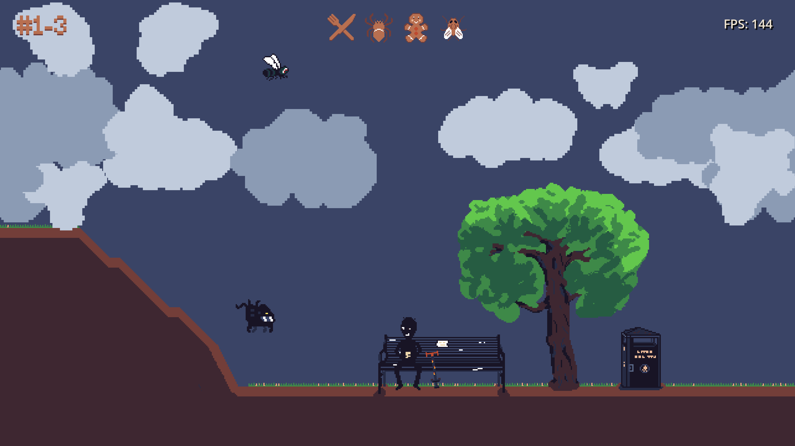
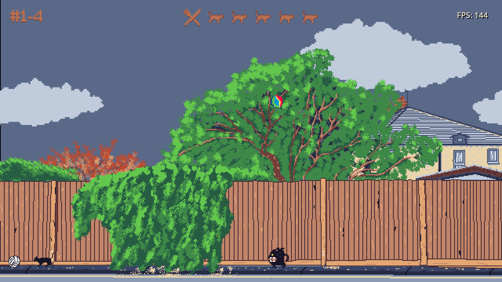

A small walk. A new idea.
Lunch Strolls is a solo-made prototype. I’m verifying the concept, exploring what makes it fun, and checking whether people want to play more.
Meet Nibzik. He’s hungry again.
Unfortunately, the people and animals of southern England are sneaky, mean, and strangely unwilling to become lunch. What should be a simple meal quickly turns into a puzzle.
Each level drops Nibzik into a new everyday setting, where he must dodge nasty surprises, outsmart his lunch, and eat everything he can catch.
A stroll rarely goes to plan.



Your interest shapes what happens next.
This is still an experiment rather than a finished game. If the idea catches your attention—or you’d like to test an early version—please get in touch. Hearing from real people is the most useful signal I can get while deciding where to take it.